OffHorizon mods
165 projects
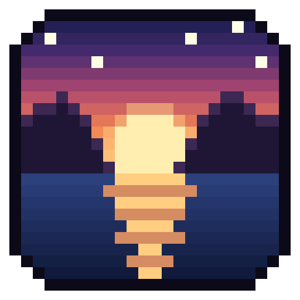
Wisdom Shaders V3 (OffHorizon port)bobcao3's Wisdom Shaders V3 ported to OffHorizon's native shader API.3 stars on GitHub105.8k downloadsShader pack · 1.3.7 · bobcao3, iLoong- ZoomHold a key to zoom in; the mouse wheel zooms further while you hold it.Rated 4.7 out of 54.7 (11)45 stars on GitHub99.7k downloadsNative mod · 2.0.0 · OffHorizon
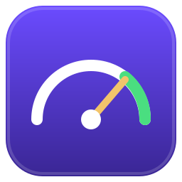
FPS CounterFrames per second in a corner of the screen, with the minimum and the 1% low.Rated 5.0 out of 55.0 (5)45 stars on GitHub84.8k downloadsNative mod · 2.0.0 · OffHorizon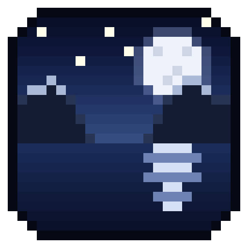
Wisdom Shaders V3 Lite (OffHorizon port)A lighter Wisdom Shaders V3 port for OffHorizon, for more FPS.3 stars on GitHub78.0k downloadsShader pack · 1.3.7 · bobcao3, tomasmendes01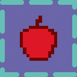
AppleSkinShows how much HP, hunger, and saturation will be restored.Rated 5.0 out of 55.0 (1)68.9k downloadsNative mod · 0.1.3 · sillysoufi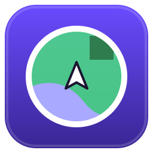
MinimapA map of the world around you in a corner of the screen.Rated 4.2 out of 54.2 (5)45 stars on GitHub55.9k downloadsNative mod · 2.0.0 · OffHorizon- Mod MenuModMenu For OffHorizonRated 4.7 out of 54.7 (9)4 stars on GitHub55.5k downloadsNative mod · 0.3.5 · tariksabanuz
- Distant OffHorizons for OffHorizon ClientSee far past your render distance: Distant OffHorizons' level-of-detail terrain, ported to Rust as a native mod.Rated 5.0 out of 55.0 (1)2 stars on GitHub53.8k downloadsNative mod · 0.1.0 · denizsahin7744, Deniz7744
 DaybreakSun shadows, reflective water, waving plants, coloured light, sun rays and bloom, built to cost as little GPU time as possible.Rated 3.7 out of 53.7 (3)3 stars on GitHub53.2k downloadsShader pack · 0.2.0 · hildlabs
DaybreakSun shadows, reflective water, waving plants, coloured light, sun rays and bloom, built to cost as little GPU time as possible.Rated 3.7 out of 53.7 (3)3 stars on GitHub53.2k downloadsShader pack · 0.2.0 · hildlabs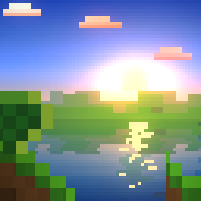
MontarcBright, colorful shader pack: soft shadows, colored light, living water, wind, and own look for the Nether and the End.1 star on GitHub43.7k downloadsShader pack · 1.1.1 · Muurrcc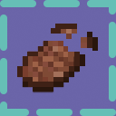
Eating AnimationWhile you eat food, or drink a potion or milk, the item in your hand shows its bitten frames.41.7k downloadsNative mod · 0.2.0 · sillysoufi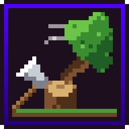
TreeFallCut one log of a natural tree with an axe and the whole tree comes down.Rated 5.0 out of 55.0 (1)41.3k downloadsNative mod · 0.3.0 · d3grando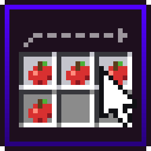
Mouse TricksInventory mouse tricks: drag to spread or gather, the wheel moves items one by one, and R sorts.Rated 5.0 out of 55.0 (3)40.1k downloadsNative mod · 0.2.0 · d3grando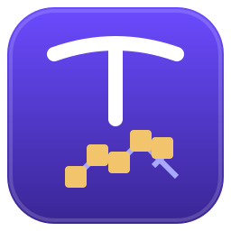
VeinminerMine connected ores and matching trees using OffHorizon's native player-mining behavior.2 stars on GitHub39.6k downloadsNative mod · 0.3.2 · levzzz5154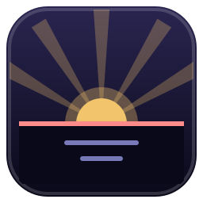
RadiantCinematic but playable: warm sun, soft shadows, light shafts, golden haze, sunset clouds, wet rainy ground and a filmic grade.35.4k downloadsShader pack · 1.0.0 · Daniel- JEI for OffHorizonAn item and recipe viewer for OffHorizon: every item beside container screens, with search, recipes, uses, tooltips and bookmarks34.4k downloadsNative mod · 0.2.1 · enderliker
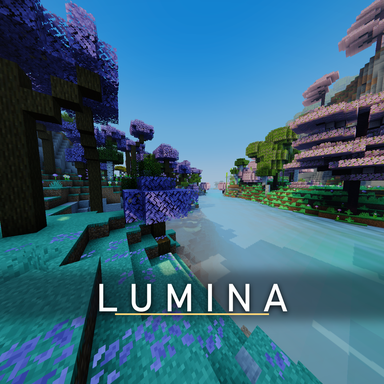
LuminaHigh performance with real-time shadows, physical water, roof overhang occlusion, volumetric 3D clouds, and sharp anti-aliasing7 stars on GitHub30.9k downloadsShader pack · 1.0.0 · cosmo-jar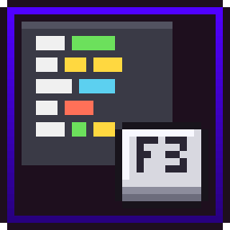
SmartF3A tidier, configurable F3 debug screen: the same information in modules you can colour, reorder and turn off.27.8k downloadsNative mod · 0.1.0 · d3grando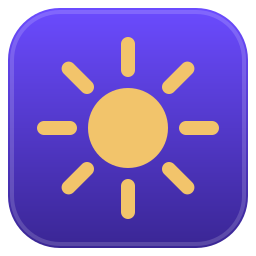
FullbrightToggle maximum 1000% gamma cave and night brightness with smooth fade via keybind G.27.2k downloadsNative mod · 1.0.0 · CayMac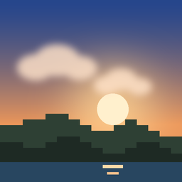
LumenCozy Photon-style shader with quality presets: soft shadows, volumetric clouds, light shafts, gorgeous water and underwater, starry nights and an epic End.25.8k downloadsShader pack · 2.6.0 · Lutziano888- Armor StatusDisplays equipped armor & held items with authentic Java durability colors.1 star on GitHub25.0k downloadsNative mod · 1.0.0 · CayMac
- ShulkerPeekA shulker box's contents as a 9 x 3 grid in its tooltip.2 stars on GitHub23.8k downloadsNative mod · 0.1.0 · vstxx
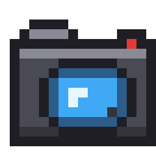
Freecam+Fly the camera anywhere while your player stays perfectly still.1 star on GitHub23.4k downloadsNative mod · 1.1.0 · _idom_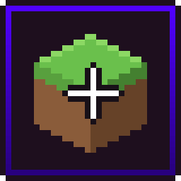
LookAtThe block or mob under your crosshair as a vanilla tooltip: icon, name in your language, health, the tool it needs and where it comes fromRated 2.0 out of 52.0 (1)2 stars on GitHub20.4k downloadsNative mod · 0.2.1 · d3grando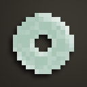
JadeThe look-at tooltip: what you're pointing at, its mod, its details and its state.2 stars on GitHub19.1k downloadsNative mod · 26.3.8 · Snownee, Joeypc6- Pastel MysticA soft pastel, dreamlike world with auroras, lavender mist and a breathing light from what you hold.18.8k downloadsShader pack · 1.0.0 · palladium7048
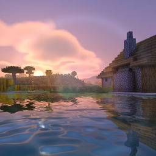
Vivid OffHorizonVivid colours, volumetric clouds, mirror-like water, rain that soaks the ground and warm torch-lit nights.1 star on GitHub18.6k downloadsShader pack · 1.0.0 · Evan-lhm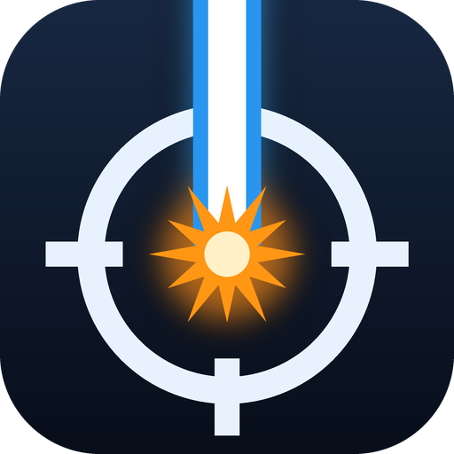
Orbital LaserFifteen orbital strikes, from a laser to a Planet Killer: a designator, a wheel, and craters that stay.Rated 5.0 out of 55.0 (1)233 stars on GitHub17.7k downloadsNative mod · 0.5.10 · Stink-O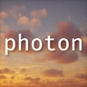
PhotonSixthSurge's Photon shaders ported to OffHorizon: realistic sky, volumetric clouds, soft coloured shadows, water, fog and bloom.Rated 4.0 out of 54.0 (1)17.6k downloadsShader pack · 1.4.0 · fbi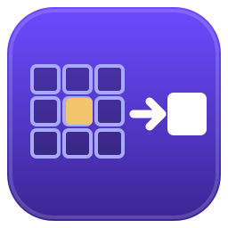
RecipesEvery item beside your inventory, with its recipes and uses.45 stars on GitHub16.6k downloadsNative mod · 2.0.0 · OffHorizon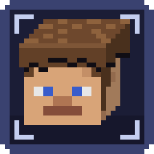
3D SkinsThe outer layer of every player's skin drawn as real 3D pixels.16.6k downloadsNative mod · 1.1.1 · _idom_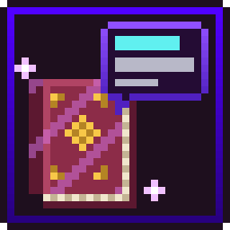
Enchantment HintsA short description under every enchantment in item tooltips, in English and Russian.16.3k downloadsNative mod · 0.1.0 · d3grando- KeystrokesYour movement keys, mouse buttons and space bar in a corner, lit while held, with clicks per second.45 stars on GitHub16.0k downloadsNative mod · 2.0.0 · OffHorizon
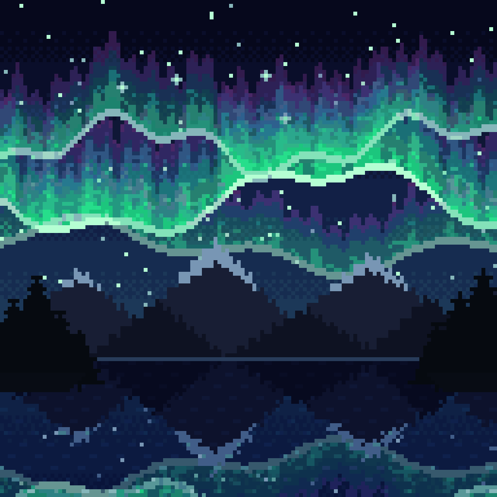
Aurora Shaders OffHorizonA shader pack for OffHorizon, written against OffHorizon's native shader API 0.1Rated 2.0 out of 52.0 (1)1 star on GitHub16.0k downloadsShader pack · 5.9.3 · iLoong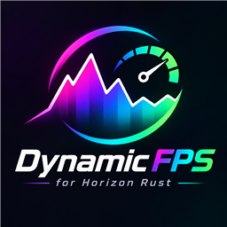
Dynamic FPS for rustReduce resource usage while Minecraft is in the background, idle, or on battery15.2k downloadsNative mod · 0.1.0 · Lyvt (dc: _.lyvt)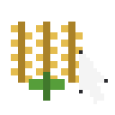
RightClickHarvestRight-click a ripe crop to pick it and sow it again.14.8k downloadsNative mod · 0.2.1 · Domanffe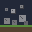
PhysicsModOffHorizonPhysics for OffHorizon, inspired by PhysicsMod: ragdolls, waves, physical particles and capes.3 stars on GitHub13.5k downloadsNative mod · 0.20.7 · tariksabanuz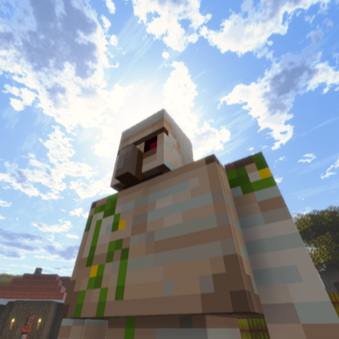
NimbeA bright, enchanting world: painted sky, volumetric clouds, sunbeams, soft shadows, living water and colored lights.Rated 4.0 out of 54.0 (1)13.2k downloadsShader pack · 1.0.0 · Reminuscul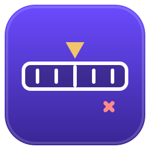
Compass EnhancedA compass bar with degrees and colored directions, plus death points that guide you back.Rated 1.0 out of 51.0 (1)1 star on GitHub13.0k downloadsMod · 0.1.0 · Isaac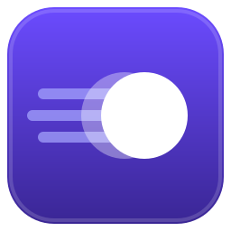
Motion BlurBlurs what moves: mobs, players, items and vehicles along their own motion, with optional camera blur.13.0k downloadsNative mod · 0.1.0 · levzzz5154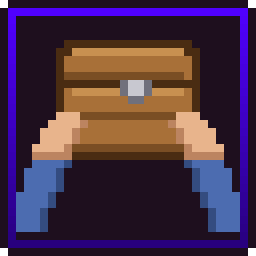
Carry BlockSneak and right-click with an empty hand to pick up a chest (with its items) or a small mob, carry it and put it down.12.3k downloadsNative mod · 0.1.2 · d3grando- Coordinates HUDYour coordinates and facing in a corner of the screen.45 stars on GitHub11.5k downloadsNative mod · 2.0.0 · OffHorizon
- ContinuityOffHorizonContinuity for OffHorizon2 stars on GitHub11.4k downloadsNative mod · 0.1.7 · tariksabanuz
- OffHorizon Voice ChatTalk with Simple Voice Chat players: proximity voice, groups, push to talk and a menu (V).Rated 3.5 out of 53.5 (2)1 star on GitHub11.2k downloadsNative mod · 1.0.0 · Nirokx
- ChatHeadsA player's head left of every chat line they wrote.10.2k downloadsNative mod · 0.1.1 · Domanffe
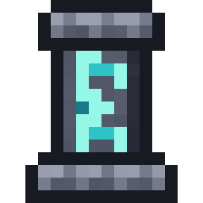
Wayfarer Stones (assets)The textures, text, recipes and villages of Wayfarer Stones. Needs the Wayfarer Stones mod.10.0k downloadsMod · 0.6.1 · bioneisme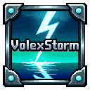
VolexVolexRated 4.0 out of 54.0 (2)9.9k downloadsShader pack · 2.0.1 · ZEIBLD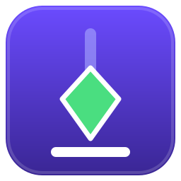
WaypointsPlace waypoints with N, manage them with M, and see their name and distance in the world.9.8k downloadsNative mod · 1.1.2 · Nirokx- Voltz (assets)The blocks, items, textures, text and recipes of Voltz. Needs the Voltz native mod.9.8k downloadsMod · 0.3.0 · Arthur Black
- FreelookHold a key for a third person camera you can look around in9.7k downloadsNative mod · 0.3.1 · Krzysix17
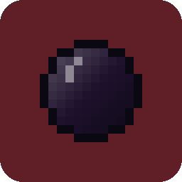
ProjectE for OffHorizon (assets)The blocks, items, textures, text and recipes of ProjectE for OffHorizon. Needs the native mod.9.3k downloadsMod · 0.1.0 · Arthur Black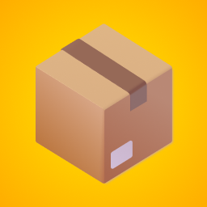
ResourcifyOffHorizonResourcify for OffHorizon2 stars on GitHub9.0k downloadsNative mod · 0.1.2 · tariksabanuz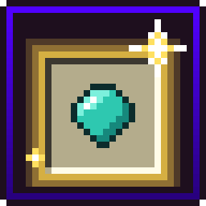
Item NewNewly picked-up items glow in your hotbar and inventory until you look at them.Rated 1.0 out of 51.0 (1)8.7k downloadsNative mod · 0.1.1 · d3grando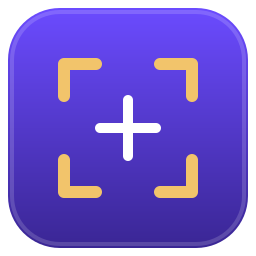
Crosshair IndicatorDynamic target reach awareness: visual feedback on your crosshair when hovering over an entity in attack range.8.7k downloadsNative mod · 1.0.0 · CayMac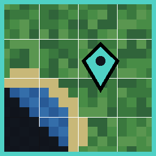
World MapA full screen, self-writing world map with a minimap, waypoints (groups, import and export), day and night, cave layers and teleport.Rated 5.0 out of 55.0 (2)3 stars on GitHub8.4k downloadsNative mod · 0.7.1 · Px228-Da-Da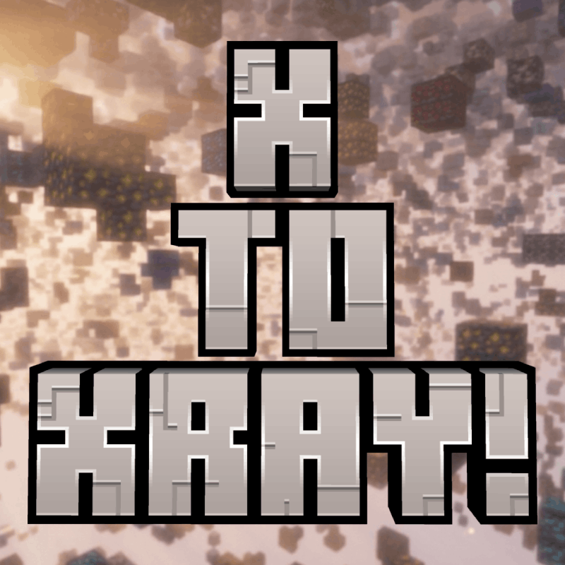
X To XrayOpensource XraymodRated 5.0 out of 55.0 (1)8.4k downloadsNative mod · 2026.29.0 · 1_st_Cat- Status Effect HUD1:1 Status Effect Bars & Inventory HUD+ Potion HUD: displays active potion/beacon effects with icons, Roman numeral amplifiers, color-coded mm:ss countdown time8.2k downloadsNative mod · 1.0.0 · CayMac
- AppleSkin1:1 Minecraft Java parity food value preview & saturation HUD overlay.Rated 5.0 out of 55.0 (1)7.5k downloadsNative mod · 1.0.0 · CayMac
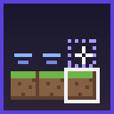
Accurate Block PlacementHold right click with a block and every new spot you look at gets one, however fast you move.7.0k downloadsNative mod · 1.0.0 · Lutziano888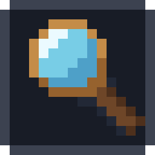
Classic ZoomHold V to zoom 3x, scroll for more, release to snap back. Instant, no settings, inspired by WI Zoom.1 star on GitHub7.0k downloadsNative mod · 2.0.0 · Surge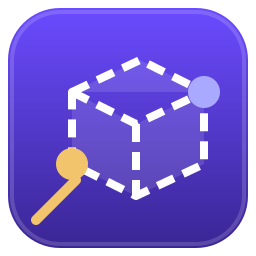
WorldEditworking port of java world edit7.0k downloadsNative mod · 1.2.1 · _cykoo_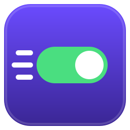
Toggle Sprint1:1 Better Sprinting & Lunar ToggleSprint HUD: toggle sprint and toggle sneak with [Sprinting (Toggled)] / [Key Held] / [Flying] status HUD and configurable Cre6.9k downloadsNative mod · 1.0.0 · CayMac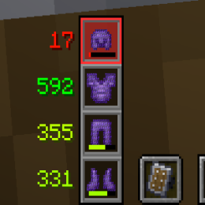
Armor HUDYour worn armor and its durability in a column left to the off-hand slot.6.8k downloadsNative mod · 1.0.0 · Thomas9950- Better Dynamic LightsOffHorizon's built-in dynamic lights, with more: glowing creatures, projectiles and TNT shine too, water puts out fire, a switch for every light.4 stars on GitHub6.7k downloadsNative mod · 1.0.4 · DeportedToHell
- Create for OffHorizonBuild rotating machines and small factories in OffHorizon with gears, belts, presses and fans.Rated 5.0 out of 55.0 (1)8 stars on GitHub6.4k downloadsNative mod · 0.7.0-alpha.2 · Delete228
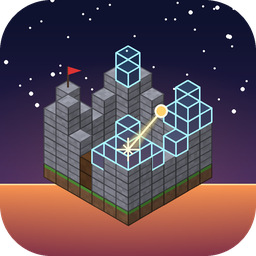
OffHorizonmaticaLitematica for OffHorizon: schematics as ghost blocks, a verifier, material lists and a printer that builds the missing blocks for you.4 stars on GitHub6.3k downloadsNative mod · 0.3.2 · keksi2k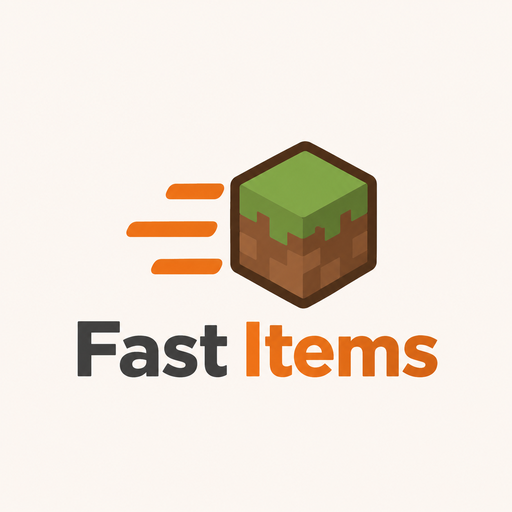
Fast Items for OffHorizonOptimize item rendering by transforming item entities to 2D6.1k downloadsNative mod · 0.1.0 · Lyvt (dc: _.lyvt)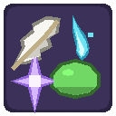
VisualitySmall pixel particles: hit fragments, slime blobs, creeper sparks, glints, soul wisps and rain ripples.6.0k downloadsNative mod · 1.0.2 · BenjiSyS- Fly SpeedAllows you to change your flight speed5.9k downloadsNative mod · 0.2.0 · ImmortalDev
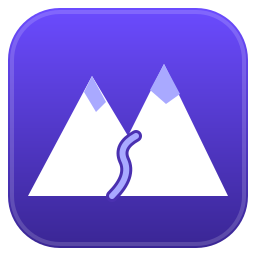
Tectonic-OffHorizonUnofficial native port of Tectonic: mountain ranges, underground rivers and configurable terrain.5.7k downloadsNative mod · 0.3.4 · eltanschauung, Apollo (original Tectonic)- Additional Lights80 decorative lamps, floor torches and wall torches with the mod's own light levels and recipes.5.6k downloadsMod · 3.1.4 · mgen256, AdLf0208
- Inventory ProfilesR-key & UI sorting (Category, A-Z, Count, ID), Auto-Refill depleted stacks, Tool Break Protection, and Quick-Stack to chests.5.4k downloadsNative mod · 1.0.0 · CayMac
 Deepbore Quarry (assets)The textures, text and recipes of Deepbore Quarry. Needs the Deepbore Quarry native mod.5.2k downloadsMod · 0.1.0 · bioneisme
Deepbore Quarry (assets)The textures, text and recipes of Deepbore Quarry. Needs the Deepbore Quarry native mod.5.2k downloadsMod · 0.1.0 · bioneisme Wayfarer StonesPlace stones around your world, activate them, and travel between the ones you know.5.2k downloadsNative mod · 0.7.0 · bioneisme
Wayfarer StonesPlace stones around your world, activate them, and travel between the ones you know.5.2k downloadsNative mod · 0.7.0 · bioneisme- The Basic HUDA visual HUD editor with 14 customizable widgets, recent pickups, effect timers, durability, coordinates, FPS and a customizable Tab list.5.2k downloadsNative mod · 0.5.0 · repositorykreml1n
- FreecamFreecam mod ported for OffHorizon1 star on GitHub5.2k downloadsNative mod · 0.1.0 · hakergeniusz
- Big NukesNuclear bombs whose shockwave digs real craters and leaves fallout. Launch missiles, build a superbomb, survive in a bunker.5.2k downloadsNative mod · 0.2.0 · bioneisme
- Applied Energistics 2Unofficial port of Applied Energistics 2 15.4.12: ME networks, autocrafting, spatial storage and more.Rated 5.0 out of 55.0 (3)2 stars on GitHub5.0k downloadsNative mod · 15.4.18 · AlgorithmX2, TeamAppliedEnergistics, Joeypc6
- MoreGammaBrightness past 100%: set your own gamma with /gamma, or toggle full brightness with /fullbright.5.0k downloadsNative mod · 1.0.0 · bezi5kt
- MouseTweaksMouse Tweaks from Java: right-drag to spread, left-drag to gather or quick-move, the wheel moves items one by one.4 stars on GitHub4.8k downloadsNative mod · 1.1.0 · DeportedToHell
- Shulker Box TooltipA port of ShulkerBoxTooltip: the contents of shulker boxes, chests, the ender chest and bundles right in their tooltip.4 stars on GitHub4.5k downloadsNative mod · 1.0.1 · DeportedToHell
- Just Enough ItemsJEI for OffHorizon: every item beside your inventory, JEI's search, recipes and uses, the "+" button, bookmarks and cheat mode.4 stars on GitHub4.4k downloadsNative mod · 1.1.2 · DeportedToHell
- GyroFull 6DOF flight physics and immersive gyro camera tilt for Minecraft OffHorizon, inspired by Do a Barrel Roll.Rated 2.0 out of 52.0 (1)4.3k downloadsNative mod · 1.4.3 · CGRLabs
- Menu PanoramaPut your own wallpaper behind the main menu in OffHorizon — Minecraft 26.3, rewritten in Rust.4.2k downloadsResource pack · 1.0.0 · form1t
- ElytraTrailsA OffHorizon mod that adds elytra trails with additional features.Rated 5.0 out of 55.0 (1)4.1k downloadsNative mod · 0.1.2 · soufi
- Factory Blocks49 industrial decorative blocks — panels, grates, vents, pipes and hazard stripes — for OffHorizon.4.0k downloadsMod · 1.4.2 · slaincow, AdLf0208
- BiomeCompassCraft a Biome Compass, pick a biome and its needle points to the nearest one.4.0k downloadsNative mod · 0.2.2 · d3grando
- WaymapPersistent client-side waypoints with 3D world markers, minimap dots, a native editor, and automatic death markers for OffHorizon.3.9k downloadsNative mod · 0.2.1 · Aron
- ProjectE for OffHorizonUnofficial port of ProjectE: EMC, transmutation tables, collectors, condensers, dark and red matter tools and armour.3.9k downloadsNative mod · 0.1.0 · Arthur Black
- AtlasA clone of Xaero's Minimap and World Map: a sharp minimap, a world map of everywhere you've been, and waypoints.2 stars on GitHub3.7k downloadsNative mod · 0.2.0 · MrCloudy2
- Fullbright & NoFogToggle full brightness and the world's fog with a key (G / N), /fullbright or /nofog.3.6k downloadsNative mod · 1.0.0 · Nirokx
- Hitbox+Customizable entity hitboxes with exact weapon & spear in-reach colors, thickness, eye rays, and sprint HUD.3.6k downloadsNative mod · 1.3.0 · taxtii, itzglecni
- Blood ParticlesBlood particles upon a mob hitRated 5.0 out of 55.0 (4)1 star on GitHub3.5k downloadsNative mod · 1.2.0 · Bogdan_Tokarev
- VoltzMachines, power, pipes, a nuclear reactor, missiles, turrets and force fields: the classic Voltz tech pack remade for OffHorizon.3.5k downloadsNative mod · 0.3.0 · Arthur Black
- Astral CruiserA huge pilotable starship with a walkable interior, lasers, dash and live portals between dimensions.3.4k downloadsNative mod · 0.1.0 · repositorykreml1n
- Deepbore QuarryA machine that digs a square pit down to bedrock on furnace fuel and fills a chest, under a moving gantry with a drill.3.4k downloadsNative mod · 0.2.0 · bioneisme
- InventoryWizardInventoryWizard's one-click sorting as a native mod for OffHorizon3.3k downloadsNative mod · 2.3.3 · VanishingTacos
- ViaOffHorizonConnect to older Minecraft servers using OffHorizon 26.3.3 stars on GitHub3.3k downloadsNative mod · 0.8.8-dev · hhhhsffd
- Smoothie CapesAn Wavey Capes inspired mod for OffHorizon3.2k downloadsNative mod · 0.5.1 · Nully
- ZoomifyA port of Zoomify: a zoom key with smooth transitions, scroll zoom, a secondary zoom and Zoomify's own settings screen.4 stars on GitHub3.1k downloadsNative mod · 1.1.1 · DeportedToHell
- Spider-ManWeb swinging, zips, wall running and parkour, tuned against the console games' feel.3 stars on GitHub3.1k downloadsNative mod · 0.2.0 · wyddy7
- LivingMotionPunchy moves ported into a hnmod.1 star on GitHub3.1k downloadsNative mod · 1.2.0 · bart
- BlockscopeThe block under your crosshair: its name, id, distance and icon, plus hardness, states and a container's slots.Rated 3.0 out of 53.0 (1)3.1k downloadsNative mod · 0.3.1 · Domanffe
- Chat Heads OffHorizonChat Heads displays player heads in the chat before the players name making it easier to see who is writingRated 5.0 out of 55.0 (1)1 star on GitHub3.1k downloadsNative mod · 1.0.2 · Demerobit
- Spotify HUDWhat Spotify is playing on your HUD, with play, pause, skip, shuffle, repeat and volume.3.1k downloadsNative mod · 1.0.0 · tomasmendes01
- Cinematic InteractionsUsing a crafting table, furnace, anvil, enchanting table and more moves the camera in close for a cinematic, hands-on scene.3.0k downloadsNative mod · 0.12.2 · tariksabanuz
- Chop!Cut one log and the whole tree tips over, crashes down and breaks apart, with soft vanilla sounds and particles.3.0k downloadsNative mod · 1.0.1 · Mayonesu0, Claude
- ServerifyFind Minecraft servers and add them to your Multiplayer list, from a page in your web browser.1 star on GitHub3.0k downloadsNative mod · 0.1.0 · Louchatfroff
- Mod MenuA port of TerraformersMC's Mod Menu: a Mods button on the title screen and pause menu opening Mod Menu's list of your mods.4 stars on GitHub3.0k downloadsNative mod · 1.1.2 · DeportedToHell
- ChatAnimationOffHorizonChatAnimation for OffHorizon2 stars on GitHub2.7k downloadsNative mod · 0.1.3 · tariksabanuz
- Atomic IndustryNuclear bombs, deep quarries, factories and wayfarer stones, with JEI, Jade and quality-of-life mods.2 stars on GitHub2.6k downloadsModpack · 1.1.0 · bioneisme
- Held Item InfoSelected-item durability, count and enchantment names above the hotbar.2.6k downloadsNative mod · 0.1.0 · AltMugen
- Light Overlay1:1 Light Overlay & MiniHUD (F7): visualizes mob-spawnable blocks with 3D Yellow (night spawn) and Red (always/cave spawn) crosses (X) or 3D light level numbers2.5k downloadsNative mod · 1.0.0 · CayMac
- Nether Star CraftingAdds a Netherstar Shard and a crafting recipe for the Nether Star.2.5k downloadsMod · 1.0.0 · Mya
- First-person ModelA port of First-person Model: see your own body in first person, with offsets for every pose and the original's settings.4 stars on GitHub2.3k downloadsNative mod · 1.0.0 · DeportedToHell
- Beautiful Day CounterA lightweight day counter, clock and day/night cycle bar for the HUD, with an in-game settings screen.2.2k downloadsNative mod · 1.7.0 · SCARABOCCHIO100
- Fair FreecamFly the camera freely while your player stays where it is, with an optional fair play mode.2.2k downloadsNative mod · 1.2.0 · Lutziano888
- Silent's Gems21 gems with storage blocks and 84 ores, plus overworld, nether and end worldgen.2.2k downloadsMod · 5.2.0 · SilentChaos512, AdLf0208
- Simple Voice Chat client (unofficial)Client-side voice chat: mic capture, Opus, positional mixing, push-to-talk, groups. Speaks Simple Voice Chat 2.6.x protocol (compat version 20).2.1k downloadsNative mod · 1.0.0 · sparticle62ops
- Right-Click CropsRight-click harvest for 16 plant families, with replanting and individual settings.Rated 5.0 out of 55.0 (2)5 stars on GitHub2.0k downloadsNative mod · 1.0.1 · AyanoKaito
- Smooth SwappingA port of Smooth Swapping: items fly from slot to slot instead of jumping, along an animation curve you can edit.4 stars on GitHub1.9k downloadsNative mod · 1.1.2 · DeportedToHell
- Movement StatusBetter toggle Sprint/Sneak display functionality1.8k downloadsNative mod · 0.1.1 · Unidex101
- Cross VersionAllows version hopping offline.1 star on GitHub1.8k downloadsNative mod · 0.8.0 · JustKarkat
- Flesh to LeatherSmelt rotten flesh into leather in a furnace.1.8k downloadsMod · 1.0.0 · CGRLabs
- Invisible FramesSneak-right-click a filled frame to hide and lock it, or restore it.1.8k downloadsNative mod · 0.1.1 · AltMugen
- CustomPlayerModels-OffHorizonCustomize your Minecraft avatar with custom models and animations1.7k downloadsNative mod · 0.1.2 · Scrapper1824, Claude
- HUD+One fully configurable HUD with a drag-and-drop editor and four views per module.1.6k downloadsNative mod · 4 · oxi-does-dev
- FlairCapes, hats, wings, pets and auras for your player, picked from an in-game catalog.1.6k downloadsNative mod · 1.0.2 · _idom_
- Fast TradingA speed-trade button on the merchant screen repeats the selected trade as fast as the settings allow.1.5k downloadsNative mod · 1.0.0 · sparticle62ops
- Macaw's TrapdoorsAll 179 of Macaw's Trapdoors — vanilla-matched woods plus glass, metal and themed sets.1.5k downloadsMod · 1.1.5 · Sketch Macaw, Peachy Macaw, AdLf0208
- FreeCamFree camera, F6 follow view and nine tripod positions for OffHorizon.1.4k downloadsNative mod · 1.0.1 · Yannis_
- SchematicsLoad schematics in every common format, see them as ghost blocks in the world, check what is missing, paste them and save areas.1.4k downloadsNative mod · 1.0.0 · Nirokx
- SalvageThe all-recycling mod: smelt leather, wood, stone, diamond gear, shells and the elytra back into useful materials, and break down armour and tools at the crafti1.3k downloadsMod · 1.2.0 · CGRLabs
- BetterF3A port of BetterF3: a customizable, colour-coded, human-readable debug screen (F3) with modules and animations.4 stars on GitHub1.3k downloadsNative mod · 1.0.0 · DeportedToHell
- ayynoxs map packMinimap and full-screen world map with waypoints, cave layers and opt-in map sharing between players.2 stars on GitHub1.2k downloadsNative mod · 0.4.2 · DenoxyYT (Ayynox)
- Living CameraA camera that moves with you: it leans into strafes, sways on turns, dips on landing and bobs with your steps1.2k downloadsNative mod · 1.1.0 · selfmonoraque5
- First Person BodySee your own body in first person: look down to see your legs and feet1.2k downloadsNative mod · 1.0.0 · selfmonoraque5
- ClientSortInventory sorting from ClientSort: Sort, Restock and Transfer buttons, middle-click sort, Shift/Ctrl/Alt for other orders.4 stars on GitHub1.1k downloadsNative mod · 1.2.1 · DeportedToHell
- Rarity BordersAdds clean, vanilla-style colored borders to inventory items based on their rarity.1.1k downloadsNative mod · 0.1.1 · Xariami
- PVP MusicBattle music during combat: fades, death fades and the phased two-half track switch, the original's behavior kept.1.0k downloadsNative mod · 1.2.0 · sparticle62ops
- Speedrun TimerSpeedrun Timer Is a mod made to count the time it took you to beat the Game1 star on GitHub965 downloadsNative mod · 1.0.1 · Demerobit
- Stuck?/stuck and /escape move you to a safe spot nearby, off the Nether roof too.956 downloadsNative mod · 1.0.0 · adasjusk, Vakarux12
- Roughly Enough ItemsREI for OffHorizon: REI's item list, search, recipe screen, favorites, craftable filter and "+" button, in REI's own look.4 stars on GitHub954 downloadsNative mod · 1.1.2 · DeportedToHell
- SeedCrackerXSeedCrackerX for OffHorizon: finds the world seed of a server from the structures you walk past, outlined through walls.952 downloadsNative mod · 0.2.3 · luhnox (this port); SeedCrackerX by 19MisterX98 and the SeedCrackerX contributors; the SeedFinding libraries by KaptainWutax and Neil and Matthew Bolan
- Server FlagsA flag beside each server in the Multiplayer list for the country it's hosted in899 downloadsNative mod · 1.0.1 · selfmonoraque5
- Minimap, Worldmap and waypoints reworkedAn adaptive minimap and world map with named waypoints, portals, world borders and a biome readout.865 downloadsNative mod · 0.4.1 · daniliammo
- KillC/killc, /killc <player> and /suicide, with an optional random respawn near (0, 0).839 downloadsNative mod · 5.1.0 · adasjusk, Vakarux12
- Server AtlasFind and organize Minecraft servers with local notes, favorites, filters, and opt-in discovery.834 downloadsNative mod · 2.2.1 · shuab
- Rider HUDImproves the Minecraft HUD while riding mounts, keeping hunger, mount health, and experience visible.822 downloadsNative mod · 0.1.0 · Xariami
- MineLightsMineLights is a Minecraft mod that brings RGB lighting integrations to Minecraft Java Edition and OffHorizon.7 stars on GitHub801 downloadsNative mod · 2.4.0 · MegaBytesMe
- RMotdRotating server list MOTDs, managed in game with /randommotd and /motd.1 star on GitHub788 downloadsNative mod · 1.0.0 · adasjusk, Vakarux12
- TrailsPaw prints, particles, lines or ribbons follow you as you move. Client-side, only you see them.782 downloadsNative mod · 1.0.0 · fbi
- Kotost First PersonYour own body, legs and arms in first person, items in your 3D hands, the game's hands for eating.764 downloadsNative mod · 0.1.0 · Kotost Games
- BaritoneA Rust port of the Baritone pathfinder: #goto, #mine, #farm, #build, #explore, #follow, #elytra and the rest.2 stars on GitHub739 downloadsNative mod · 1.1.52 · luhnox (this port); Baritone by leijurv and the Baritone contributors
- I'm FastRemoves Minecraft's server-side player and elytra movement limits.717 downloadsNative mod · 0.1.0 · Gabriel Hiss, AdLf0208
- Map PreviewSee a map's picture in its tooltip and in its inventory slot, so you can tell your maps apart665 downloadsNative mod · 1.0.0 · selfmonoraque5
- Strangely CharmingAn exploration and quality-of-life mod659 downloadsNative mod · 0.2.11 · Evander
- Kotost RouletteStake game items, spin a wheel, win a dearer item or lose the stake. Every item has a price in points; Russian and English.650 downloadsNative mod · 0.1.0 · Kotost Games
- Pick Up NotifierA port of Pick Up Notifier: the items, experience and arrows you pick up, listed in a corner of the screen.4 stars on GitHub633 downloadsNative mod · 1.1.0 · DeportedToHell
- Inferium LabGrow Inferium on farmland and harvest its essence in OffHorizon 26.3.1 star on GitHub571 downloadsNative mod · 0.1.0 · pehe1
- Context_tool_swapClassic Tool swap566 downloadsNative mod · 1.3.0 · TTCjonasTTC, Qwen
- Kotost BustA bust drawn from your own skin that bounces only when you move, an hourglass figure, chestplates in its shape.532 downloadsNative mod · 0.4.0 · Kotost Games
- Fence PerchJump onto fences, walls and closed gates from a standstill, stand on top, step off.1 star on GitHub527 downloadsNative mod · 1.0.0 · AyanoKaito
- Kotost ChestTwo buttons beside a chest's sort button: everything into the chest, everything out of it.519 downloadsNative mod · 0.1.0 · Kotost Games
- Abelha skullTurns the Minecraft bee into the YouTuber MoonSkull_tutoriais280 downloadsResource pack · 1.0.0 · MoonSkull_tutoriais